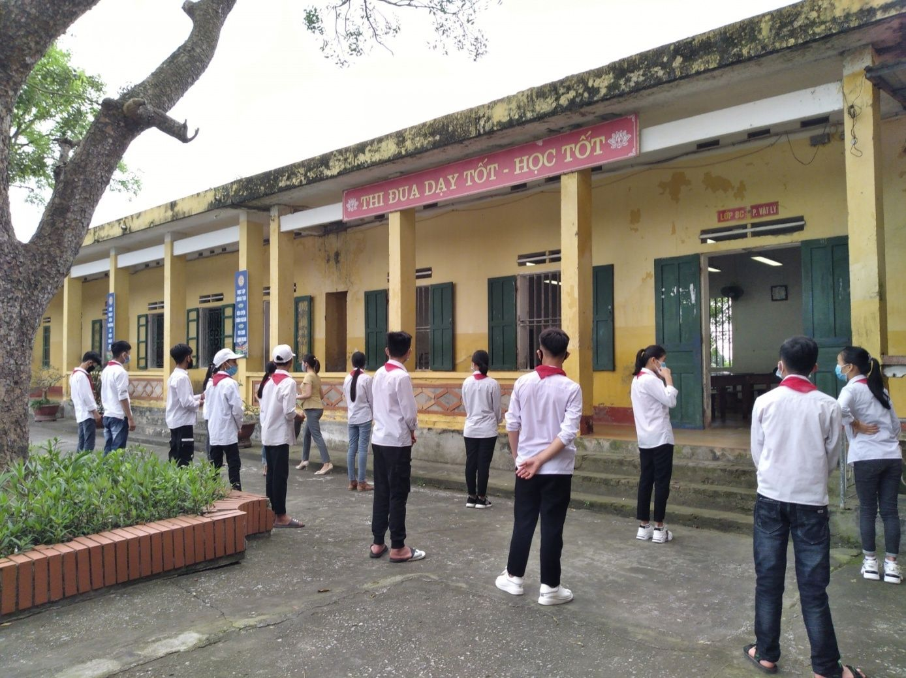
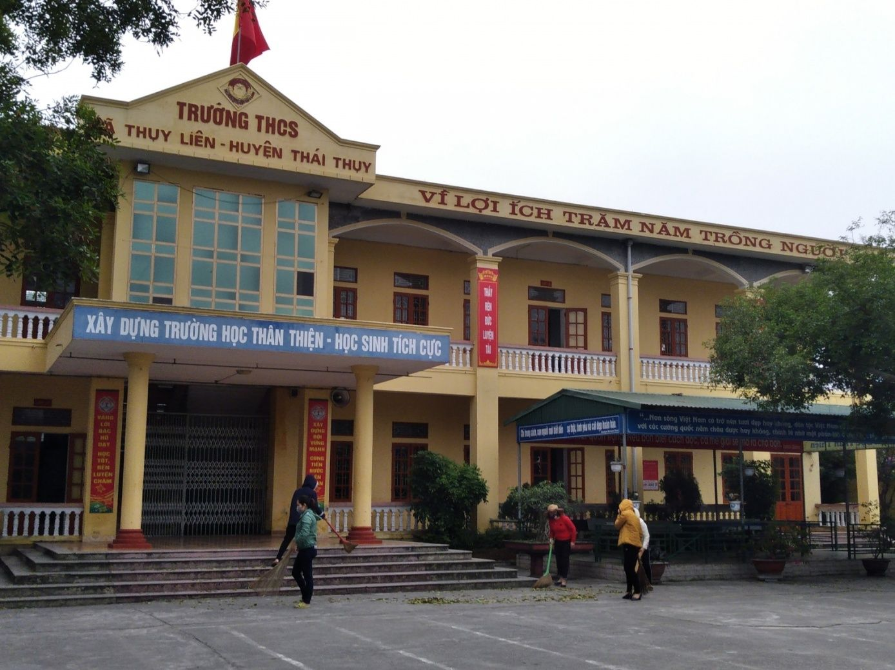

Thái Bình yêu cầu gắt gao phòng dịch khi HS quay trở lại trường
Sở GD&ĐT Thái Bình hướng dẫn chi tiết các biện pháp phòng, chống dịch bệnh Covid-19, dịch bệnh mùa Đông-Xuân khi học sinh trở lại trường.

Trường THCS Thụy Liên, Thái Thụy, Thái Bình thực hiện giãn cách khi học sinh trở lại trường.
Chuẩn bị kỹ trước khi học sinh đi học trở lại
Chia sẻ lưu ý các cơ sở giáo dục về công tác chuẩn bị trước khi học sinh trở lại trường học, ông Nguyễn Viết Hiển, Giám đốc Sở GD&ĐT Thái Bình nhấn mạnh việc thực hiện tổng vệ sinh, phun/lau khử khuẩn trường, lớp.
Cùng với đó là chuẩn bị máy đo thân nhiệt, nước sát khuẩn nhanh bảo đảm chất lượng, xà phòng và vòi nước sạch rửa tay đặt tại các vị trí thuận lợi, ở những khu vực giáo viên, học sinh thường xuyên qua lại sử dụng.
Theo đó, tối thiểu mỗi phòng học phải bố trí 1 máy đo thân nhiệt, 1 chai dung dịch sát khuẩn nhanh với dung lượng phù hợp với số lượng học sinh, 1 hộp giấy lau tay, 1 thùng đựng rác (dùng để chứa khẩu trang, giấy lau tay thải loại...); 1 hộp khẩu trang dự phòng để hỗ trợ học sinh khi khấu trang bị mất, bị hỏng; 1 sổ ghi nhật ký sức khỏe học sinh.
Bố trí các bảng thông tin, hướng dẫn, khuyến cáo thực hiện các biện pháp phòng, chống dịch bệnh Covid-19 và bệnh dịch mùa Đông-Xuân ở các vị trí thuận lợi, đúng quy cách đế giáo viên dễ quan sát, dễ hiếu, dễ thực hiện.
Bố trí phòng học rộng rãi, thoáng mát, đủ bàn ghế để học sinh ngồi giãn cách. Không sử dụng máy điều hòa nhiệt độ trong phòng học.
Các cơ sở giáo dục cũng cần kịp thời phối hợp với chính quyền địa phương đẩy mạnh công tác tuyên truyền về kế hoạch dạy học và các biện pháp bảo đảm an toàn phòng chống dịch bệnh trên các phương tiện thông tin đại chúng để người dân và cha mẹ học sinh tin tưởng, yên tâm khi cho con em trở lại trường học.
Kịp thời thông báo đến cha mẹ học sinh và giáo viên, học sinh các biện pháp, yêu cầu cần thiết khi trở lại trường như: thời gian đi học, tự đo thân nhiệt trước khi đến trường, khai báo y tế, nếu có dấu hiệu sức khỏe không bình thường thì chủ động xin phép không đến trường.
Giám đốc Nguyễn Viết Hiển cũng nhấn mạnh việc các cơ sở giáo dục không tổ chức đi du xuân, yêu cầu cán bộ, giáo viên, học sinh không đến những vùng có dịch, hạn chế đến địa phương nguy cơ có dịch bệnh. Nếu trường hợp phải đi ra tỉnh ngoài phải được sự đồng ý của Thủ trưởng đơn vị. Hạn chế tham gia tụ tập đông người.
Cán bộ, giáo viên, nhân viên cơ sở giáo dục và học sinh khối THPT phải gương mẫu, nghiêm túc thực hiện các quy định, biện pháp phòng chống dịch Covid-19 và phải là một tuyên truyền viên trong gia đình, trong cộng đồng.

Trường học thực hiện nghiêm khử khuẩn, vệ sinh trường lớp để phòng chống dịch bệnh.
Giãn cách để phòng dịch khi học sinh đến trường
Khi học sinh đến trường và trong thời gian ở trường, Sở GD&ĐT Thái Bình yêu cầu tổ chức đo thân nhiệt cho từng cán bộ, giáo viên, nhân viên, học sinh và khách khi vào trường (có nhật ký ghi chép chi tiết); khai báo y tế; không để người có biểu hiện sốt, ho, khó thở, không đeo khẩu trang vào trường.
Yêu cầu cán bộ, giáo viên, nhân viên và học sinh đeo khẩu trang từ nhà đến trường, từ trường về nhà và trong suốt thời gian có mặt ở trường.
Khi học tập ở trường, giáo viên hướng dẫn học sinh thực hiện các biện pháp phòng, chống dịch bệnh: tự theo dõi sức khỏe bản thân, thường xuyên rửa tay bằng dung dịch sát khuẩn hoặc bằng xà phòng dưới vòi nước sạch; kịp thời báo cáo giáo viên chủ nhiệm, lãnh đạo trường khi phát hiện có cán bộ, giáo viên, học sinh có biểu hiện ho, sốt, có liên quan đến F1, F2... để có biện pháp xử lý.
Yêu cầu học sinh không tụ tập đông người nhất là giờ ra chơi, có ý thức giãn cách để phòng dịch cho mình và cho tập thể lớp, cho cộng đồng; hạn chế sang lớp khác giao lưu.
Kết thúc mỗi buổi học, duy trì thực hiện vệ sinh, khử khuẩn trường, lớp, bàn ghế, thiết bị dạy học theo đúng quy định; kiểm tra, bổ sung nước sát khuấn, xà phòng và các vật dụng cần thiết khác để chuẩn bị cho buổi học tiếp theo.
Báo Giáo dục và Thời đại.